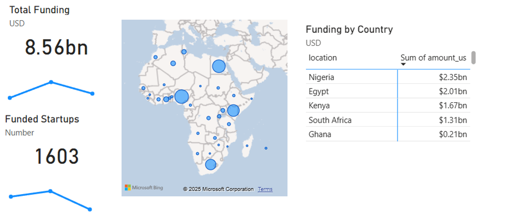
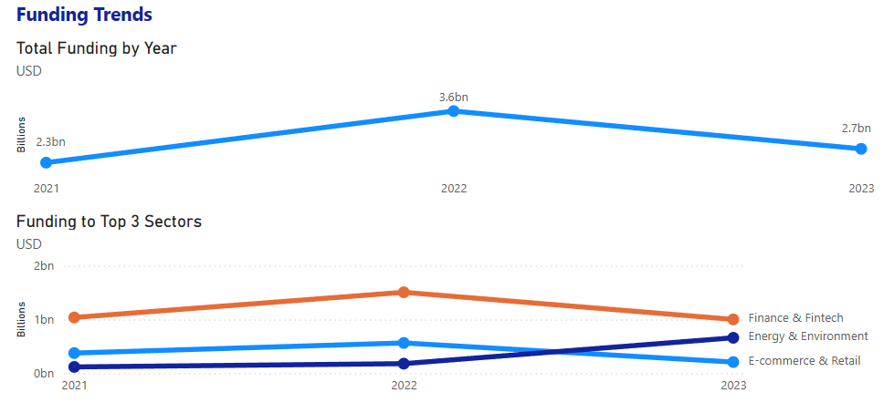
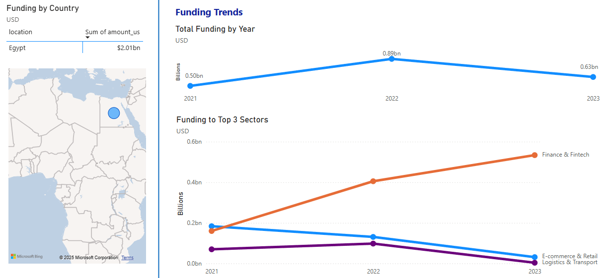
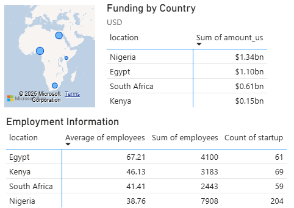
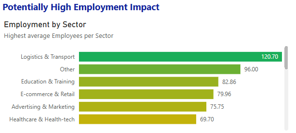
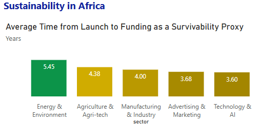
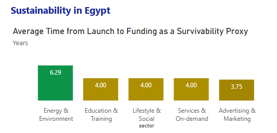

Disruptive Tech (DT) Private Financing in Africa (Y21-23)

DT Private Finance Flow to Africa and the Big Four
DT Private Finance Flow to Africa (Sectoral)
DT Private Finance Flow to Egypt (Sectoral)
Fintech Insights: Funding and Employment (The Big Four)
Egypt: Employment by Sector
Sector Sustainability Proxy: Africa
Sector Sustainability Proxy: Egypt 
Project information
- Category: Finance
- Data Source: DA Fin Reports 21-23
- Project date: 17 January, 2025
- Project URL: GitHub Repository
DT Private Financing in Africa (Y21-23)
This study examines mobilized DT private financing in Egypt compared to the broader Africa region.
Finance Flow and the Big Four
Between 2021 and 2023, private DT financing amounting to $8.56 billion flowed into Africa.
Egypt emerged as one of the top four recipients, securing $2.01 billion.
It ranked second after Nigeria ($2.35 billion) and was followed
by Kenya ($1.67 billion) and South Africa ($1.31 billion).
The four countries dominate the regional market for private finance into DT.
Top Financed Sectors
Total funding was concentrated in:
- Fintech – $3.55 billion
- E-commerce – $1.15 billion
- Energy & Environment – $0.96 billion
Egypt’s $2.01 billion went mainly to:
- fintech – $1.1 billion
- E-commerce – $0.35 billion
- Logistics & Transport – $0.17 billion
Thus, Fintech emerged as the most funded sector in both Africa and Egypt by a significant margin.
Employment Insights
The financed startups totaled 1,603 across Africa, including 292 in Egypt. These startups reported employing 76,000 people across Africa, with Egypt accounting for 19,000 jobs. Egyptian startups reported an average of 64 employees per startup, surpassing the African average of 47 employees per startup. It placed second among the Big Four; Kenya (75), Nigeria (41), and SA (35).
Egyptian DT startups employ a significant number of
people and have strong potential for future job creation.
The caveat: This data does not tell us anything about job quality, productivity, or wages.
A Closer Look at Fintech
- Nigeria: $1.34 billion (204 startups, 38 employees/startup)
- Egypt: $1.1 billion (61 startups, 67 employees/startup)
- South Africa: $0.61 billion (69 startups, 33 employees/startup)
- Kenya: $0.15 billion (59 startups, 43 employees/startup)
Egypt has a high concentration of funding flowing into a relatively small number of fintech
startups employing large workforces. While this could indicate strong employment generation,
it may also signal inefficiencies and lower productivity.
Recent private investments in AI and tech tend to focus on highly innovative startups with lean structures and high productivity.
Egypt’s fintech sector could benefit from greater diversification and increased competition, which may lead to spillover effects and improved efficiency.
The same applies to the E-commerce & Retail sector.
Putting the "Angel" in Angel Investor
Private investors are recently prioritizing job creation as means to value creation. The Logistics & Transport sector in Egypt presents the greatest potential. This sector received $0.17 billion in funding, supporting 27 startups with an average of 120 employees per startup (totaling 3,240 jobs). Education & Training is also worth noting.
Sustainability
For any investor, profitability is key. However, startups rarely disclose profitability metrics. One alternative indicator is sustainability, which can be measured using the average time from launch to funding.
Most Sustainable Startups in Africa (by sector) were Energy & Environment at 5.45 years and Agri-tech at 4.38.
These are sectors where Egypt received only $0.01 billion and $0.001 billion, respectively.
On the positive side, Egypt’s Education & Training sector has demonstrated resilience,
with an average sustainability of 4.0 years, attracting $0.04 billion in funding during the period.
Gender Inclusion: A Missing Piece
Inclusivity remains a critical concern for investors and policymakers. It reflects how well a startup ecosystem integrates all segments of society. Across Africa, 13% of mobilized DT funds went to female-led or female-managed startups. In Egypt, however, only 3% of mobilized funds reached female-led or female-managed startups—highlighting a significant gender gap in Egypt’s startup ecosystem.
Recommendations
To the Government of Egypt:To Private Investors in Egypt: